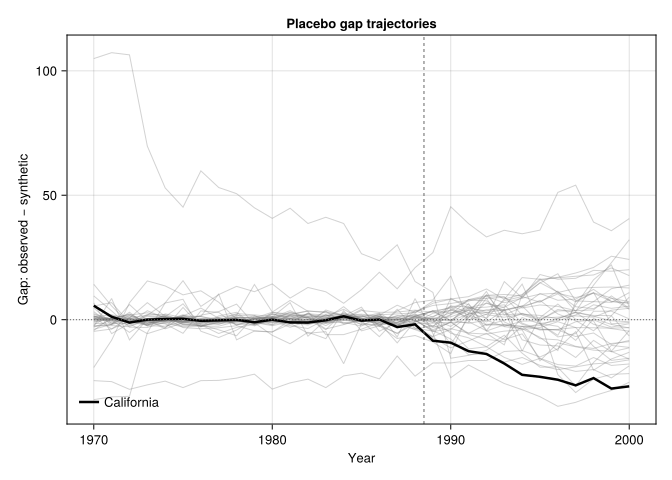
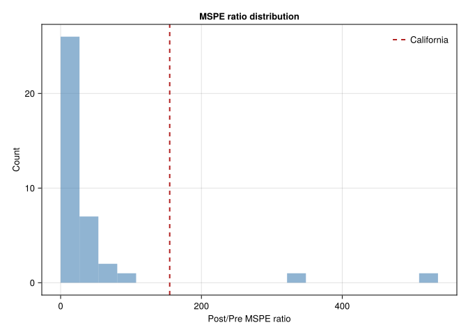
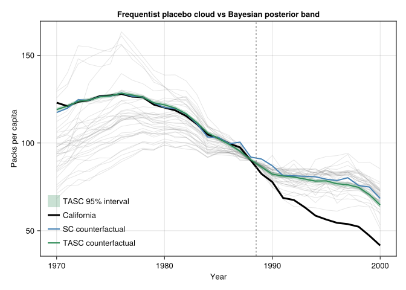

using DataFrames
using SynthDiD
using Statistics
using Random
using CairoMakie
using TASC15 Randomization Inference for Synthetic Control
Synthetic control is often used when there is one treated unit: California, West Germany, the Basque Country. Usual large-sample standard errors are not very helpful because there is no large sample of treated units. Two approaches are common:
- Randomization inference: use donor units as placebos.
- Posterior inference: put a model on the counterfactual path and compute posterior uncertainty.
Here I use both on the Proposition 99 panel.
15.1 The placebo test
The placebo idea is simple. Take each control unit in turn, pretend it was treated, and re-run synthetic control. This produces a placebo gap for each donor. The collection of placebo gaps is the empirical null distribution under no effect.
If California’s gap is large relative to the placebo gaps, that is evidence against the no-effect null.
california = california_prop99()
setup = panel_matrices(california, :State, :Year, :PacksPerCapita, :treated)
Y = setup.Y
N0 = setup.N0 # 38 donor states
T0 = setup.T0 # 1989 onward is post-treatment
N1 = size(Y, 1) - N0 # 1 treated state (California)
years = Int.(setup.times)
# California's observed effect (SC estimate)
tau_sc = sc_estimate(Y, N0, T0)
ca_obs = vec(Y[N0 + 1, :])
ca_cfact = vec(tau_sc.weights.omega' * Y[1:N0, :])
ca_effect = mean(ca_obs[(T0 + 1):end]) - mean(ca_cfact[(T0 + 1):end])
@printf("California ATT (SC): %.2f packs per capita\n", ca_effect)California ATT (SC): -19.62 packs per capitaNow run the placebo: each control state takes a turn as the “treated” unit.
function run_placebo(Y, N0, T0, treated_idx)
# Swap treated_idx into the last row (treated slot); remaining donors fill 1..N0-1
donor_idx = setdiff(1:N0, treated_idx)
Y_perm = vcat(Y[donor_idx, :], Y[treated_idx:treated_idx, :])
fit = sc_estimate(Y_perm, length(donor_idx), T0)
treated = vec(Y_perm[end, :])
cfact = vec(fit.weights.omega' * Y_perm[1:length(donor_idx), :])
return treated, cfact
end
placebo_effects = Float64[]
placebo_paths = Matrix{Float64}(undef, N0, size(Y, 2))
placebo_cfacts = Matrix{Float64}(undef, N0, size(Y, 2))
for i in 1:N0
treated_i, cfact_i = run_placebo(Y, N0, T0, i)
placebo_paths[i, :] = treated_i .- cfact_i
placebo_cfacts[i, :] = cfact_i
push!(placebo_effects, mean(treated_i[(T0 + 1):end] .- cfact_i[(T0 + 1):end]))
end
# California's treatment effect path
ca_gap = ca_obs .- ca_cfact
@printf("California ATT: %.2f\n", ca_effect)
@printf("Placebo distribution mean: %.2f\n", mean(placebo_effects))
@printf("Placebo distribution sd: %.2f\n", std(placebo_effects))California ATT: -19.62
Placebo distribution mean: 0.32
Placebo distribution sd: 10.7615.1.1 The two-sided p-value
A Fisher-style exact \(p\)-value is the fraction of placebo effects at least as extreme (in absolute value) as the observed effect:
p_value = mean(abs.(placebo_effects) .>= abs(ca_effect))
@printf("Two-sided p-value: %.3f\n", p_value)Two-sided p-value: 0.053With 38 donor states, the smallest possible \(p\)-value is \(1/39 \approx 0.026\) (California plus 38 placebos). A \(p\)-value at this floor means the observed effect is more extreme than every placebo — strong evidence against the sharp null.
15.1.2 The placebo plot
The usual plot overlays the placebo gaps in grey and California’s gap in black. If the black line is outside the grey cloud, California looks unusual.
fig = Figure(size = (740, 380), fontsize = 13)
ax = Axis(fig[1, 1], xlabel = "Year", ylabel = "Gap: observed − synthetic",
title = "Placebo gap trajectories")
for i in 1:N0
lines!(ax, years, placebo_paths[i, :],
color = (:grey, 0.35), linewidth = 1)
end
lines!(ax, years, ca_gap, color = :black, linewidth = 2.5, label = "California")
hlines!(ax, [0.0]; color = :gray40, linestyle = :dot, linewidth = 1)
vlines!(ax, [years[T0] + 0.5]; color = :gray40, linestyle = :dash, linewidth = 1)
axislegend(ax, position = :lb, framevisible = false)
fig
15.2 The MSPE ratio test
Some donor states fit California’s pre-period trajectory better than others. A placebo state whose synthetic control fits its own pre-period poorly will produce a large pre-period gap by construction, inflating its placebo effect even under the sharp null. Abadie, Diamond, and Hainmueller (2015) propose normalising by pre-treatment fit:
\[ \text{MSPE ratio}(\ell) = \frac{\frac{1}{T - T_0}\sum_{t > T_0} (Y_{\ell t} - \hat Y_{\ell t})^2} {\frac{1}{T_0}\sum_{t \le T_0} (Y_{\ell t} - \hat Y_{\ell t})^2}. \]
A large ratio means post-treatment gap is large relative to pre-treatment fit. The MSPE ratio test compares California’s ratio to the distribution of placebo ratios.
function mspe_ratio(treated, cfact, T0)
pre = mean((treated[1:T0] .- cfact[1:T0]).^2)
post = mean((treated[(T0 + 1):end] .- cfact[(T0 + 1):end]).^2)
return post / max(pre, eps())
end
ca_ratio = mspe_ratio(ca_obs, ca_cfact, T0)
placebo_ratios = Float64[]
for i in 1:N0
treated_i, cfact_i = run_placebo(Y, N0, T0, i)
push!(placebo_ratios, mspe_ratio(treated_i, cfact_i, T0))
end
p_ratio = mean(placebo_ratios .>= ca_ratio)
@printf("California MSPE ratio: %.2f\n", ca_ratio)
@printf("Placebo ratio 75th pct: %.2f\n", quantile(placebo_ratios, 0.75))
@printf("Placebo ratio max: %.2f\n", maximum(placebo_ratios))
@printf("One-sided p-value (ratio): %.3f\n", p_ratio)California MSPE ratio: 154.94
Placebo ratio 75th pct: 35.00
Placebo ratio max: 536.00
One-sided p-value (ratio): 0.053The MSPE ratio discounts placebo states that were poorly fit before treatment.
fig = Figure(size = (640, 360), fontsize = 13)
ax = Axis(fig[1, 1], xlabel = "Post/Pre MSPE ratio",
ylabel = "Count", title = "MSPE ratio distribution")
hist!(ax, placebo_ratios, bins = 20, color = (:steelblue, 0.6))
vlines!(ax, [ca_ratio]; color = :firebrick, linewidth = 2, linestyle = :dash,
label = "California")
axislegend(ax, position = :rt, framevisible = false)
fig
15.3 Time placebo
Another check moves the treatment date backward into the pre-period. If the method finds a large placebo effect before Proposition 99, the post-treatment effect is less credible.
# Pretend treatment started in 1980 instead of 1989
T0_placebo = findfirst(==(1980), years) - 1
Y_pre = Y[:, 1:T0] # cut off real treatment period
fit_pre = sc_estimate(Y_pre, N0, T0_placebo)
ca_pre = vec(Y_pre[N0 + 1, :])
ca_pre_cf = vec(fit_pre.weights.omega' * Y_pre[1:N0, :])
placebo_effect_time = mean(ca_pre[(T0_placebo + 1):end] .- ca_pre_cf[(T0_placebo + 1):end])
@printf("Time-placebo effect (treatment moved to 1980): %.2f\n", placebo_effect_time)
@printf("Real effect (treatment in 1989): %.2f\n", ca_effect)Time-placebo effect (treatment moved to 1980): -3.31
Real effect (treatment in 1989): -19.62Here the time-placebo effect is much smaller than the real effect.
15.4 TASC posterior as Bayesian alternative
TASC models the panel with a linear Gaussian state-space process and returns a posterior distribution over the counterfactual path. This is model-based uncertainty, not a placebo distribution.
Y_tasc = vcat(Y[(N0 + 1):end, :], Y[1:N0, :])
tasc_model = fit_tasc(Y_tasc; d = 2, T0 = T0, n_em = 200, tol = 1e-3)
tasc_pred = predict_counterfactual(tasc_model, Y_tasc)
tasc_cfact = vec(tasc_pred.target)
tasc_se = sqrt.(max.(vec(tasc_pred.variance), 0.0))
tasc_lower = tasc_cfact .- 1.96 .* tasc_se
tasc_upper = tasc_cfact .+ 1.96 .* tasc_se
# At each post-treatment year, is California outside the band?
years_post = years[(T0 + 1):end]
outside = (ca_obs[(T0 + 1):end] .< tasc_lower[(T0 + 1):end]) .|
(ca_obs[(T0 + 1):end] .> tasc_upper[(T0 + 1):end])
@printf("Years California is outside the 95%% band: %d/%d\n",
sum(outside), length(outside))Years California is outside the 95% band: 12/12# Convert placebo gaps to counterfactual paths for visualisation
fig = Figure(size = (820, 420), fontsize = 13)
ax = Axis(fig[1, 1], xlabel = "Year", ylabel = "Packs per capita",
title = "Frequentist placebo cloud vs Bayesian posterior band")
# Placebo counterfactuals (treated outcome minus gap, mapped to California's level)
for i in 1:N0
cf = placebo_cfacts[i, :] .+ (ca_obs[T0] - placebo_cfacts[i, T0])
lines!(ax, years, cf, color = (:grey, 0.20), linewidth = 1)
end
band!(ax, years, tasc_lower, tasc_upper;
color = (:seagreen, 0.25), label = "TASC 95% interval")
lines!(ax, years, ca_obs; color = :black, linewidth = 3, label = "California")
lines!(ax, years, ca_cfact; color = :steelblue, linewidth = 2, label = "SC counterfactual")
lines!(ax, years, tasc_cfact; color = :seagreen, linewidth = 2, label = "TASC counterfactual")
vlines!(ax, [years[T0] + 0.5]; color = :gray40, linestyle = :dash, linewidth = 1)
axislegend(ax, position = :lb, framevisible = false)
fig
15.5 How the two inference strategies compare
| Randomization inference | TASC posterior | |
|---|---|---|
| What is uncertain? | Which unit was treated | Latent factor path |
| Null hypothesis | Sharp null: no effect anywhere | None — direct uncertainty |
| Validity requires | Donor pool comparable to treated | SSM correctly specified |
| Output | Permutation p-value | Posterior band |
| Smallest p possible | \(1/(N_0 + 1)\) (here ~0.026) | N/A — continuous |
| Sensitivity to donor pool | High (small N0 → coarse p) | Low (band reflects modelling) |
The two strategies answer different questions. Randomization inference asks whether California is unusual relative to donor-state placebos. TASC asks how uncertain the model is about California’s counterfactual path. I would report both when using TASC.
15.6 Summary
- With one treated unit, randomization inference is more useful than asymptotic standard errors.
- Unit placebos give the empirical null distribution.
- MSPE ratios account for pre-treatment fit.
- Time placebos check whether the method finds effects before treatment.
- TASC posterior bands give model-based uncertainty for the counterfactual path.